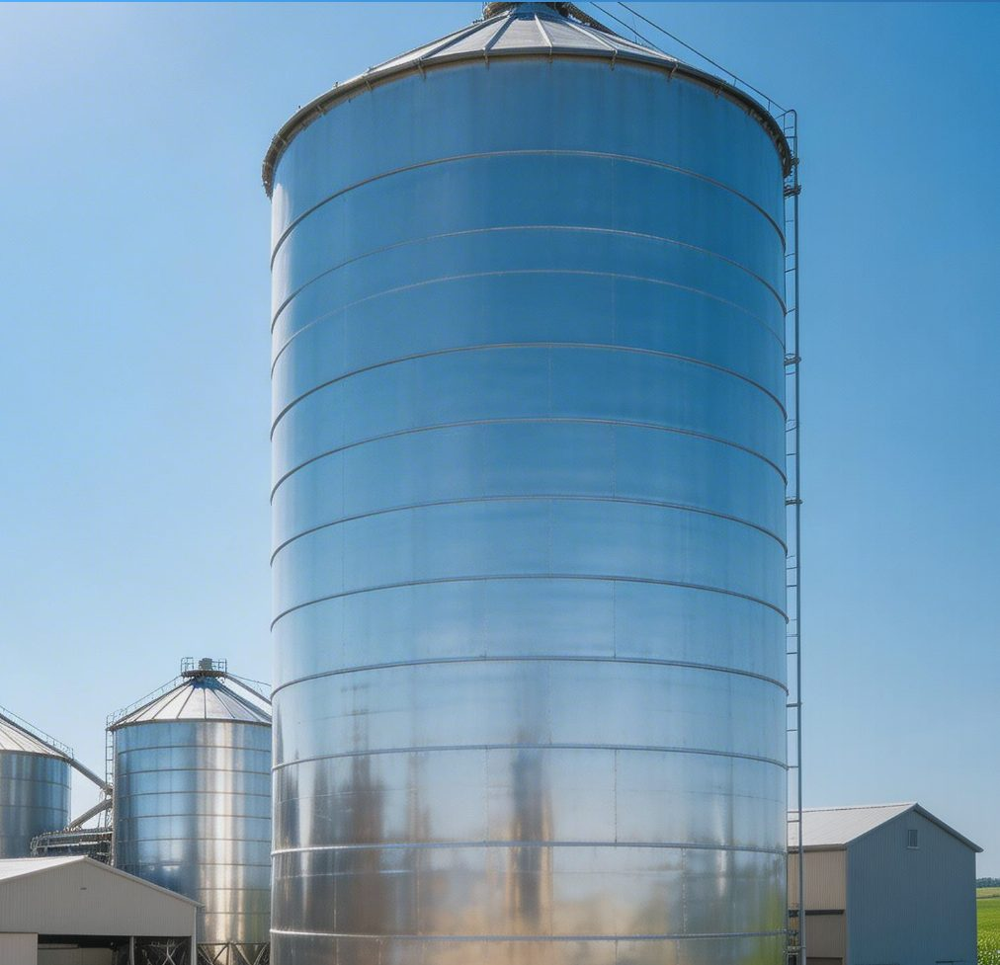
Your Digital Wallet for Stored Material
Every tonne inside your silo is money. Do you know your balance?
PATENTED · EP 4 524 526Your silo keeps a secret from you
WITHOUT SensSILO
- Material bridging creates hidden cavities — you think 40 t, you have 28 t
- One support leg carries 34% instead of 25% — dangerous structural stress
- No way to detect fill level accurately without climbing the silo
- Overfill event: €62,480 cleanup and fines at minimum
- Structural failure: €195,000+
WITH SensSILO
- Exact weight on every leg — per-cell distribution visible instantly
- Automated alerts before overfill or structural danger thresholds
- Consumption velocity tracked — know when to reorder, not guess
- Full history: every filling, every emptying, every anomaly logged
A site caught a problem nobody saw
A bulk storage site running 4 silos. Operator relied on manual checks and an old level indicator. Everything looked "fine."
SensSILO found that LC3 carried 27.61% and LC1 only 22.05% — a 5.56% skew growing silently for months. Asymmetric loading heading toward structural fatigue cracks within 18 months.
Operator repositioned the fill pipe and rebalanced foundation anchors. Cost of fix: €2,400. Cost of avoided failure: €195,000+.
The system also revealed NIA of 9.21 — meaning 9.21 filling/emptying cycles per month — which completely changed how they scheduled deliveries.
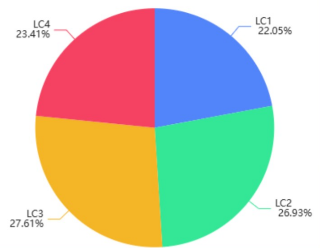
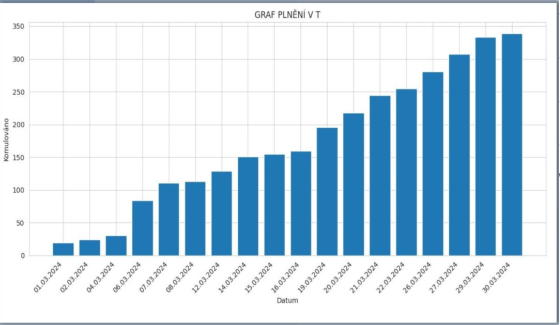
Fits your existing silo. No civil works.
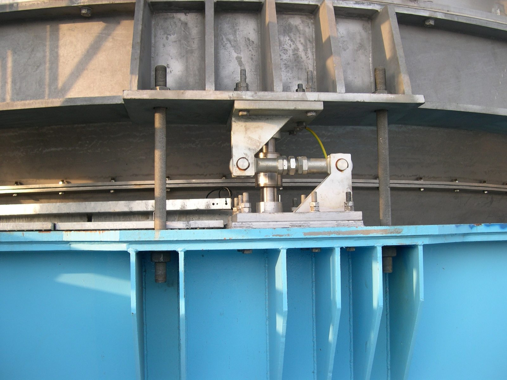
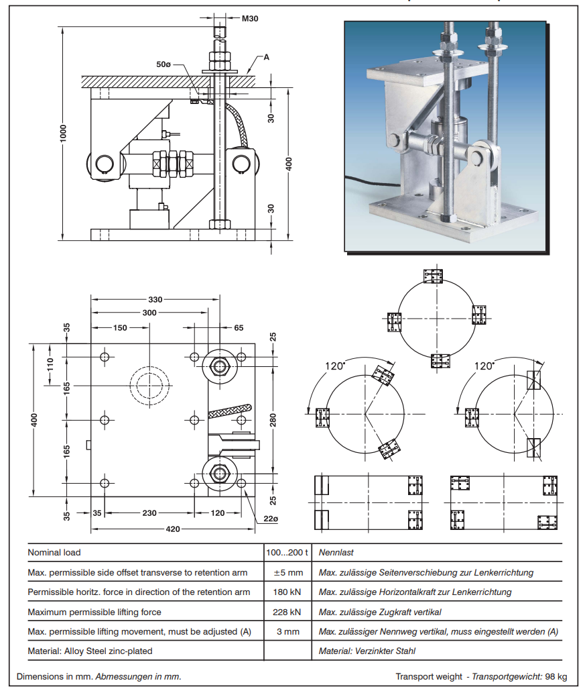
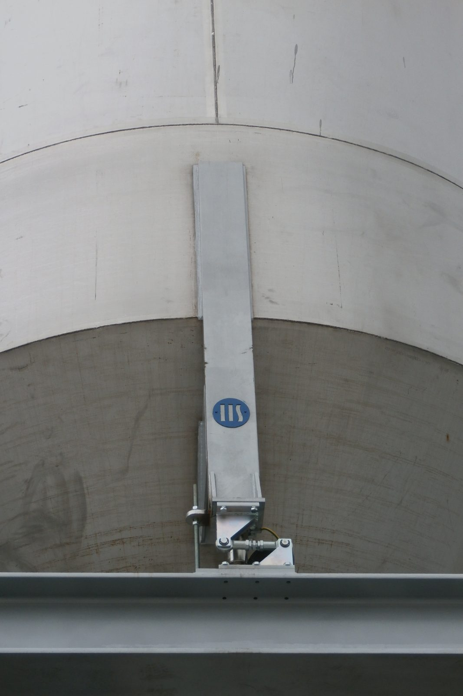
From sensor to your phone — in seconds
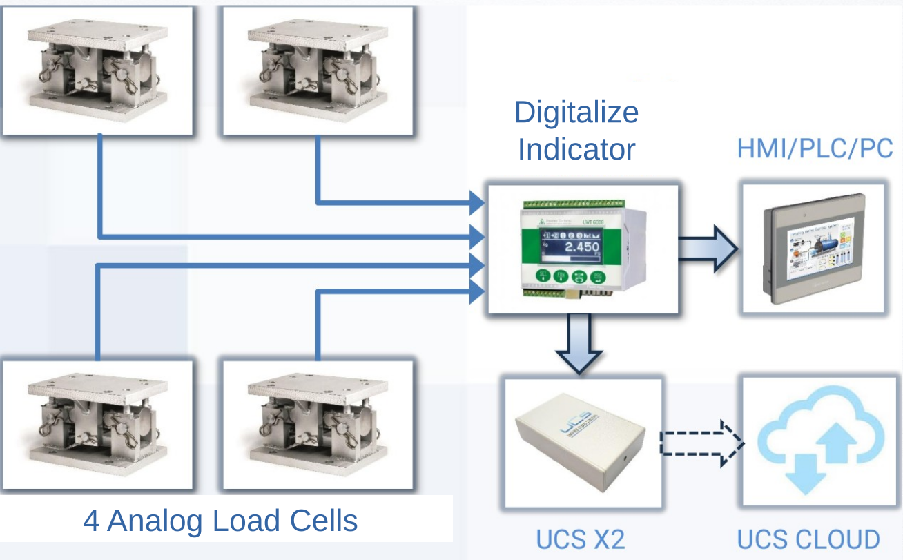
4× Load Cells
Under each silo leg
UWT6008 Digitalizer
Converts analog signals
UCS X2 Gateway
Secure NB-IoT transmission
Your Dashboard
Phone, tablet, desktop — anywhere
The entire system costs less than one emergency technician visit. And it never sleeps.
Open your digital wallet
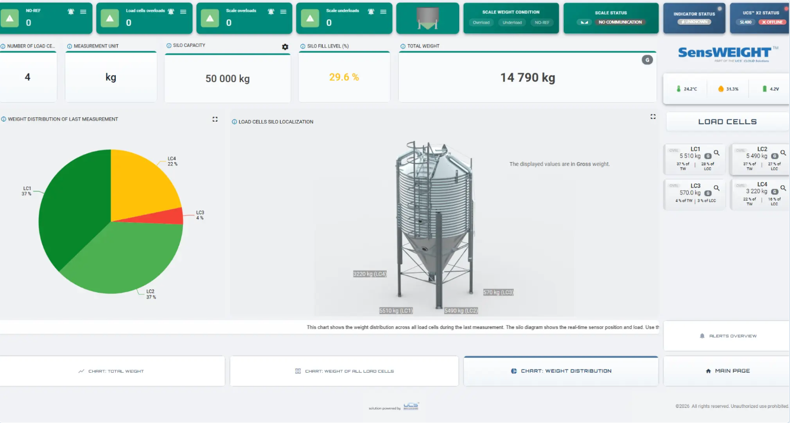
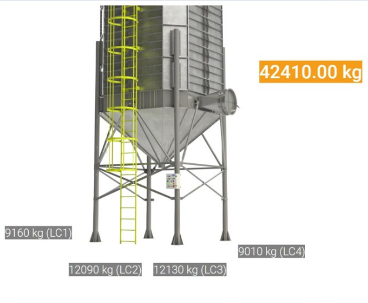
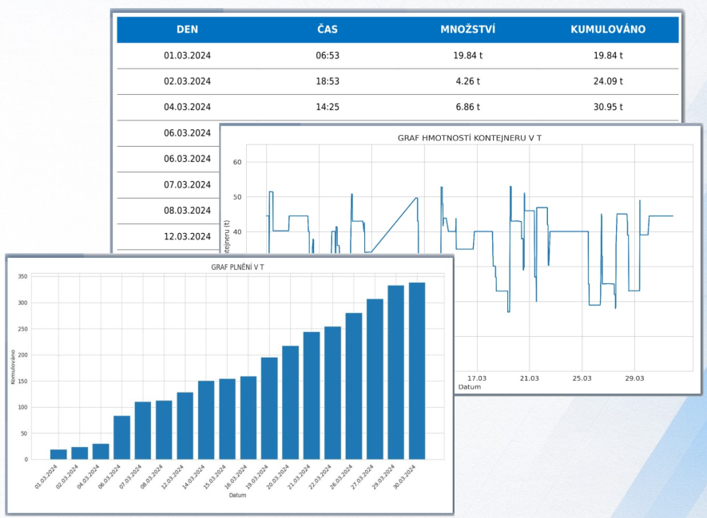
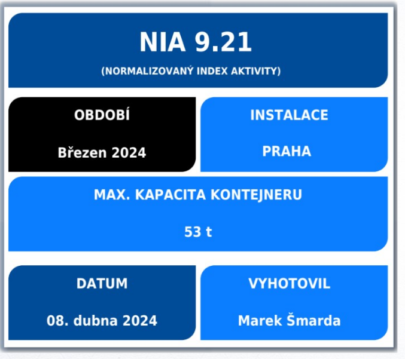
66 days to full payback
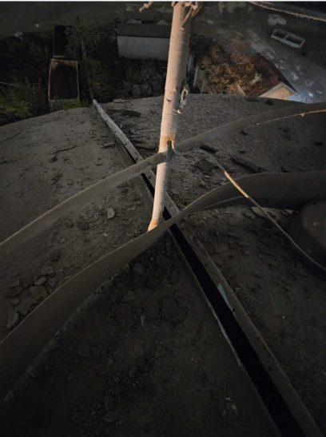
Structural failure or overfilling doesn't just cost money — it threatens lives. This is not a theoretical risk.
See it working on your silo
Enhance your perception boundaries
Free 30-day pilot on your busiest silo — we lend you the system for a month at no cost. If it doesn't catch something you missed — walk away.
Know your balance
Exact tonnage per leg, fill velocity, consumption patterns — your silo becomes a transparent account.
Prevent catastrophe
Structural warnings before damage, not after. Overfill alerts before spills, not during.
Plan with data
Stop ordering by guesswork. Start ordering by consumption velocity.
Contact: Nikola Avramović, COO · n.avramovic@unifiedcloudsensors.com · +420 546 427 053